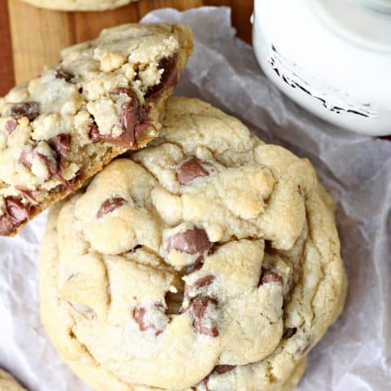

Crumble Cookies

Description
This right here is probably the best cookies you are ever going to try. After trying the crumble cookie shop near me and having a bite of the chocolate chip cookie, I was appalled. How could such a simple chocolate chip cookie taste so amazing? Here's the recipe on how to make a cookie as big as your palm and warm and gooey on the inside.
Ingredients
- 1 cup cold butter, cut into small pieces
- 1 1/4 cups brown sugar
- 1/2 cup white sugar
- 2 eggs
- 2 teaspoons vanilla
- 1 1/2 cups cake flour
- 1 1/2 cups all-purpose flour
- 1 teaspoon baking soda
- 1 teaspoon salt
- 2 cups milk chocolate chips
yield: 1 Dozen
Steps
- Preheat oven to 375 degrees. Line two baking sheets with parchment paper.
- In a large bowl, beat the butter and sugars on high speed for 3-5 minutes, occasionally scraping down the sides of the bowl.
- Add eggs and vanilla and beat for 1 minute more.
- Mix in flours, baking soda and salt. Stir in chocolate chips.
- Measure 1/3 cup of dough and form into a ball. Pull the ball in half, then press it back together with one of the jagged edges facing up. Place the dough balls on the prepared cookies sheets, 2 inches apart (6 cookies per sheet).
- Bake for about 10 minutes, or until cookies are just golden. Do not over bake. Let sit on cookie sheet for ten minutes before removing to a wire rack to cool completely.
Back to Homepage